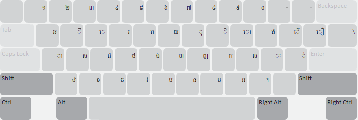
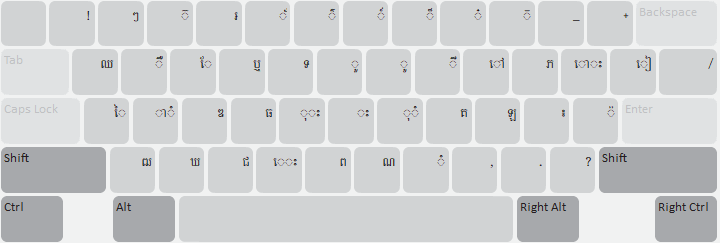
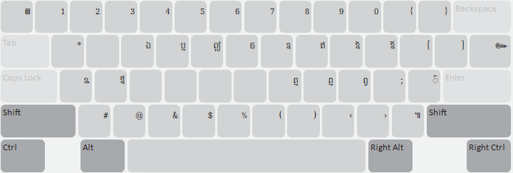
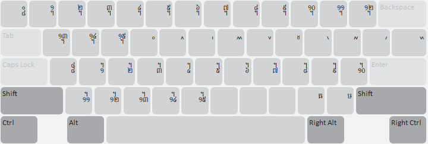
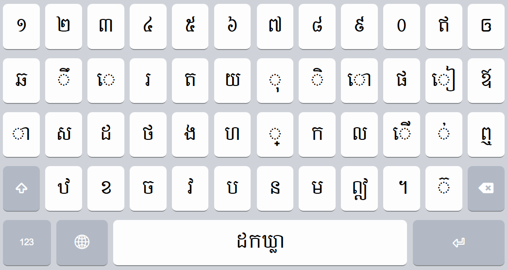
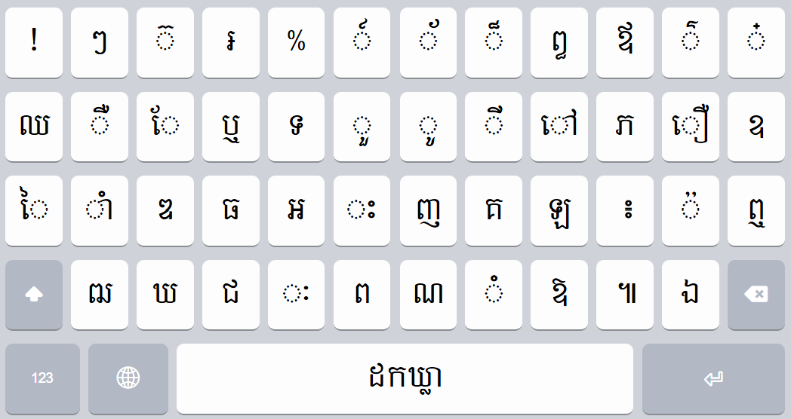
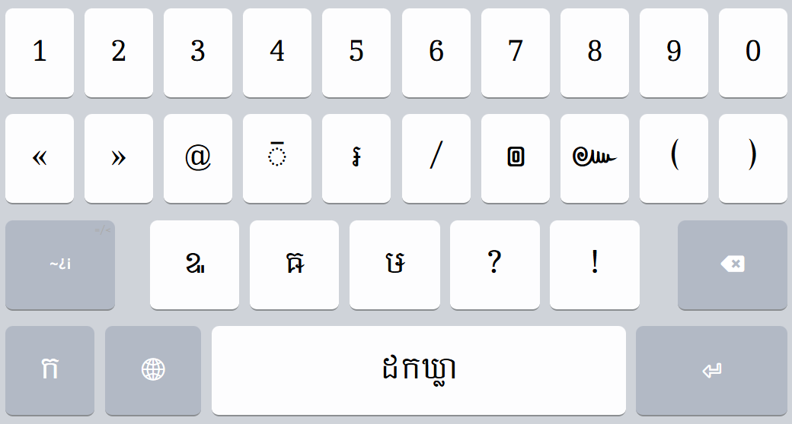
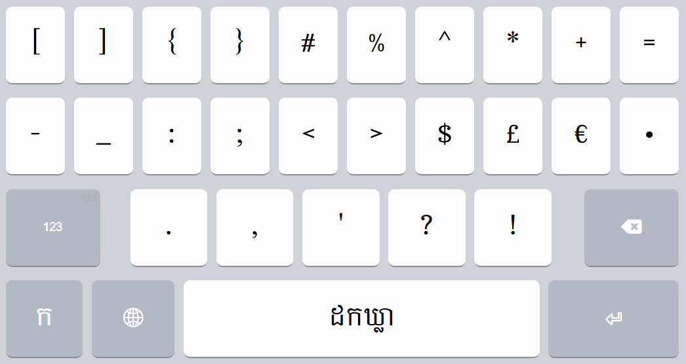

The Khmer Traditional keyboard is designed to facilitate a seamless transition from the standard Microsoft Khmer keyboard layout to the Keyman platform. It preserves the canonical character inventory and key mappings familiar to users across both desktop and mobile environments, thereby minimizing cognitive load and supporting continuity in typing Khmer alphabets.
A distinctive feature of this keyboard is the inclusion of the character ឲ, which is mapped to the Right Alt + y key combination. This character is not currently represented in the standard Microsoft Khmer layout, although its inclusion is under consideration as of April 2026. The present implementation addresses this gap by providing direct access within Keyman.







